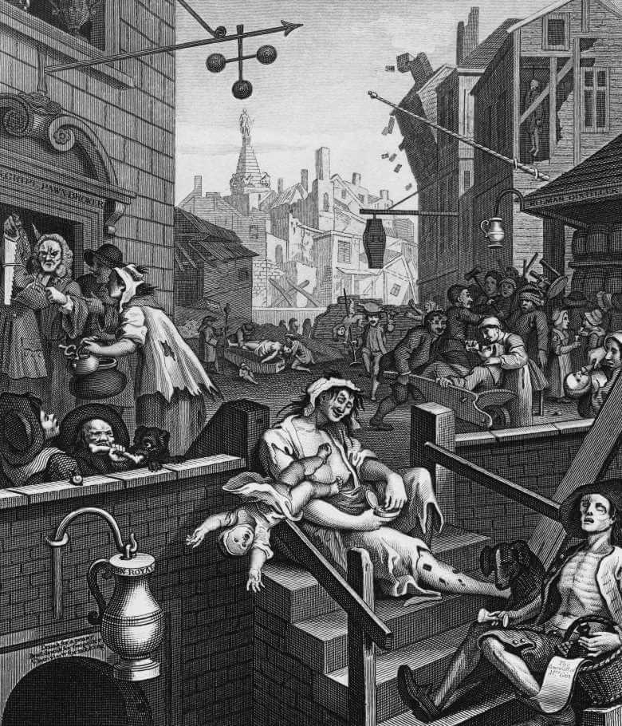

Renowned the world over, the great British pub is not just a place to drink beer, wine, cider or even something a little bit stronger. It is also a unique social centre, very often the focus of community life in villages, towns and cities throughout the length and breadth of the country.
Yet it appears that the great British pub actually started life as a great Italian wine bar, and dates back almost 2,000 years.
It was an invading Roman army that first brought Roman roads, Roman towns and Roman pubs known as tabernae to these shores in 43 AD. Such tabernae, or shops that sold wine, were quickly built alongside Roman roads and in towns to help quench the thirst of the legionary troops.
It was ale, however, that was the native British brew, and it appears that these tabernae quickly adapted to provide the locals with their favourite tipple, with the word eventually being corrupted to tavern.
These taverns or alehouses not only survived but continued to adapt to an ever changing clientele, through invading Angles, Saxons, Jutes, and not forgetting those fearsome Scandinavian Vikings. In around 970 AD, one Anglo-Saxon king, Edgar, even attempted to limit the number of alehouses in any one village. He is also said to have been responsible for introducing a drinking measure known as ‘the peg’ as a means of controlling the amount of alcohol an individual could consume, hence the expression “to take (someone) down a peg”.
Taverns and alehouses provided food and drink to their guests, whilst inns offered accommodation for weary travellers. These could include merchants, court officials or pilgrims travelling to and from religious shrines, as immortalised by Geoffrey Chaucer in his Canterbury Tales.
Inns also served military purposes; one of the oldest dating from 1189 AD is Ye Olde Trip to Jerusalem in Nottingham, and is said to have acted as a recruitment centre for volunteers to accompany King Richard I (The Lionheart) on his crusade to the Holy Lands.